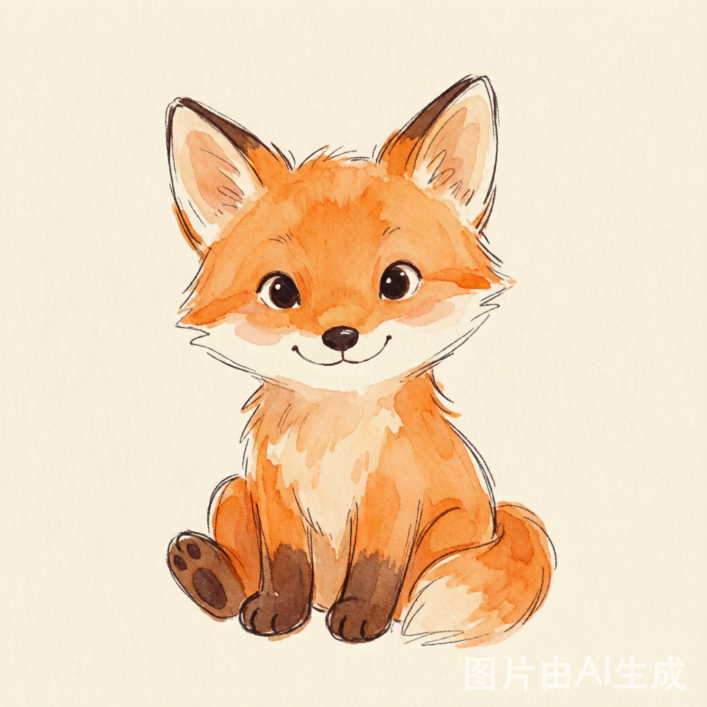
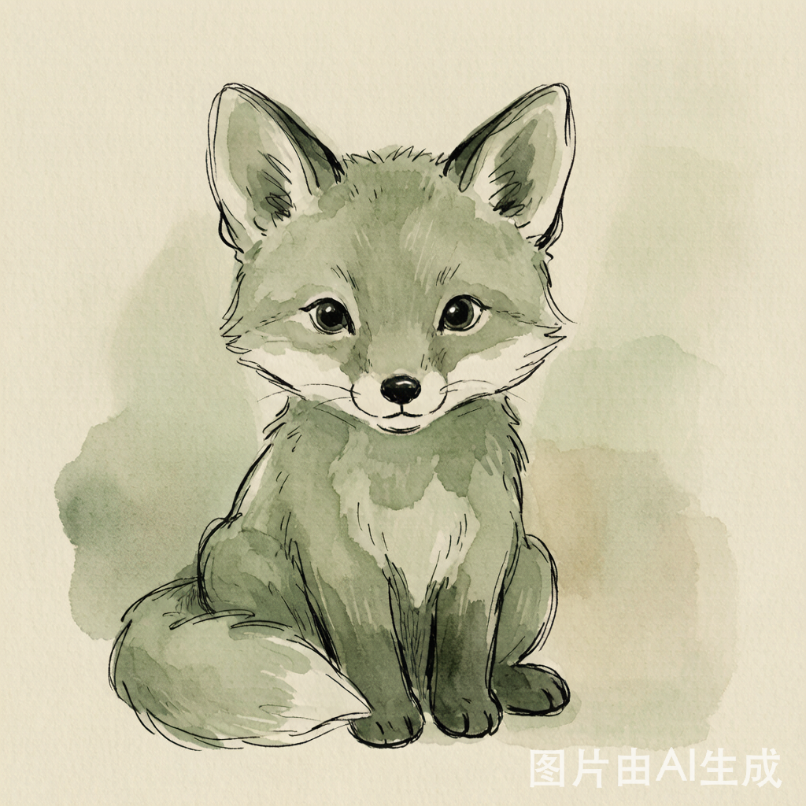
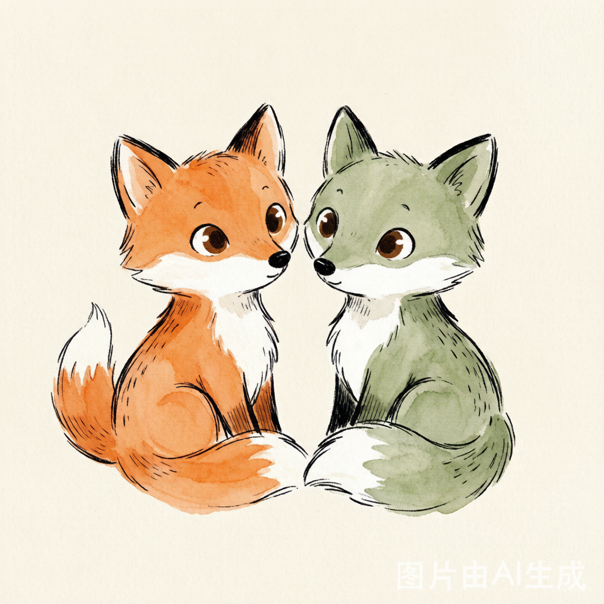
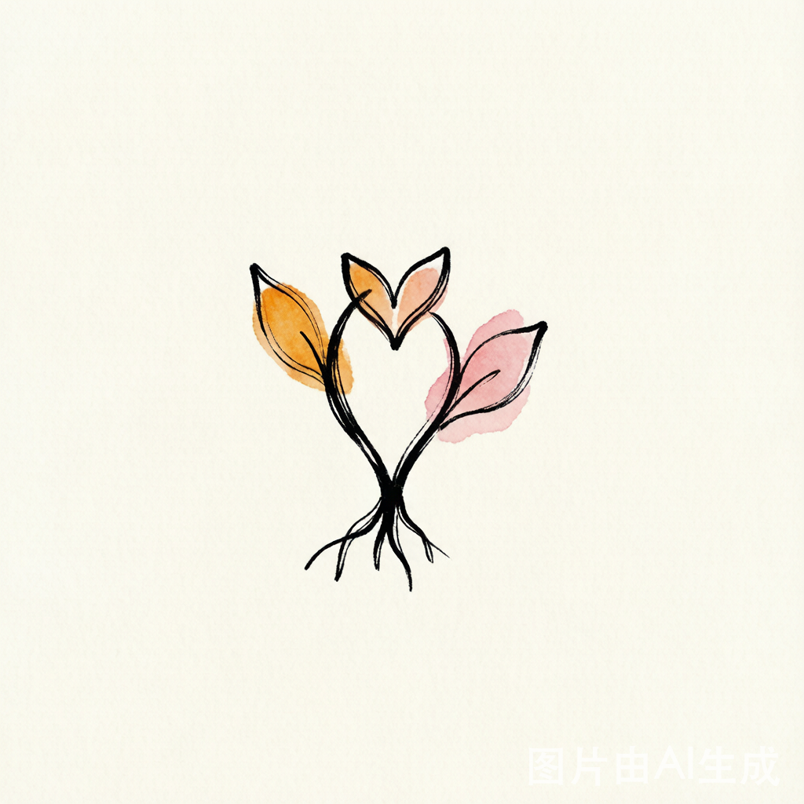
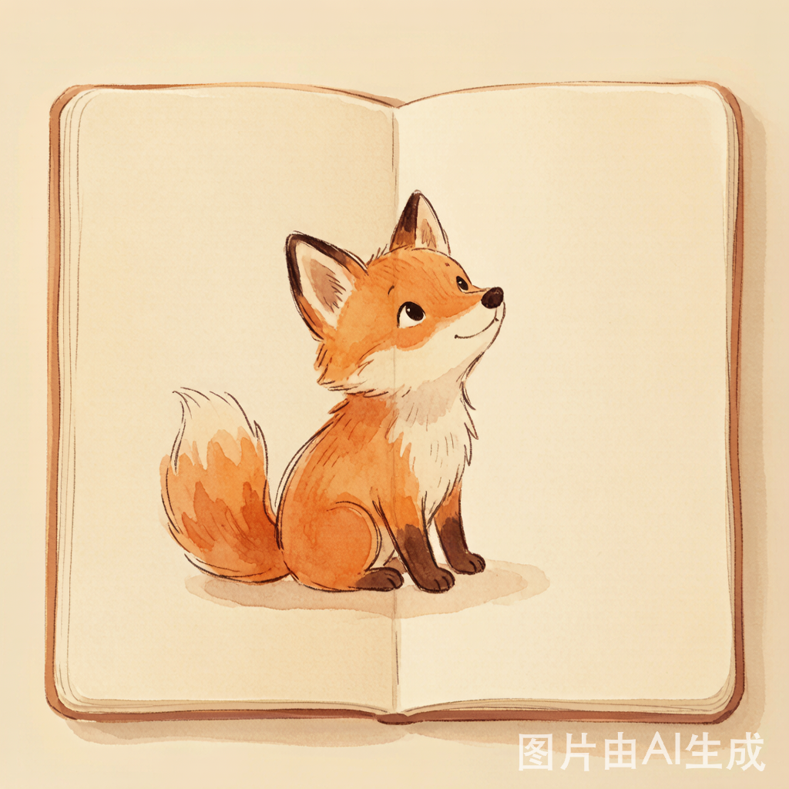

星球宝宝头像 宝宝头像系统
水彩星球 + 简洁面部表情。大宝=温暖微笑+轨道环，小宝=wink+小卫星。

大宝 · 星球宝宝 A
#E07B3E
特征：轨道环 + 温暖微笑
用途：大宝默认头像
用途：大宝默认头像

小宝 · 星球宝宝 B
#D48068
特征：小卫星 + wink 微笑
用途：小宝默认头像
用途：小宝默认头像
方向 C · 星图日记 — 真实水彩手绘风格 · 签字笔线条 + 水彩晕染 + 纸张肌理
由 AI 图像生成的水彩手绘插画。每只狐狸都有独特的手绘笔触：粗细变化的墨线轮廓、水彩晕染填充、不完美的有机形状。



水彩星球 + 简洁面部表情。大宝=温暖微笑+轨道环，小宝=wink+小卫星。
两个 Logo 方向均为真实手绘风格——签字笔线条有粗细变化，水彩填充有自然晕染。

用于无数据、首次使用引导等场景。狐狸坐在空白手帐本上，传递"开始记录吧"的邀请感。

| 维度 | 规范 |
|---|---|
| 绘制方式 | AI 图像生成（混元生图）→ 水彩手绘风格 → PNG 输出 |
| 画风关键词 | hand-painted watercolor, loose brushstrokes, ink outline, journal sketch, children's book illustration |
| 线条风格 | 签字笔墨线，粗细变化（varying thickness），圆头端点，有机不完美 |
| 填充风格 | 透明水彩晕染（watercolor wash），可见纸张纹理（paper texture），非平涂 |
| 色彩限制 | amber #E07B3E / rose #D48068 / mint #5C9A6E / gold #C8993E / ink #2A2017 / paper #FDFAF3 |
| 输出格式 | PNG（透明背景或暖纸背景），1024×1024 源图，按需缩放 |
| WXSS 兼容 | PNG 图片直接使用，无需 filter/mask/clip-path |
| 表情规则 | 大宝=温暖微笑（圆眼+弧形笑），小宝=wink（单闭眼+弧形笑），Gold=开心大笑+星光 |
| 不对称原则 | 手绘允许 ±5% 不对称，这是灵魂所在，不要追求完美居中 |
当前产出由 AI 图像生成模型（混元生图 3.0）以水彩手绘风格 prompt 绘制，效果已接近儿童绘本插画师水准。若需更高品质的真人手绘（如签约插画家定制稿），可在此 AI 产出的基础上进行二次精修，或作为给真人画师的风格参考稿（style reference）。
v6 品牌统一后：双狐为唯一 IP。Sage 狐替代 Rose 狐（去性别化）。星球宝宝头像已归档。
 fox-rose · 已弃用
fox-rose · 已弃用 fox-duo-heart · 旧版
fox-duo-heart · 旧版